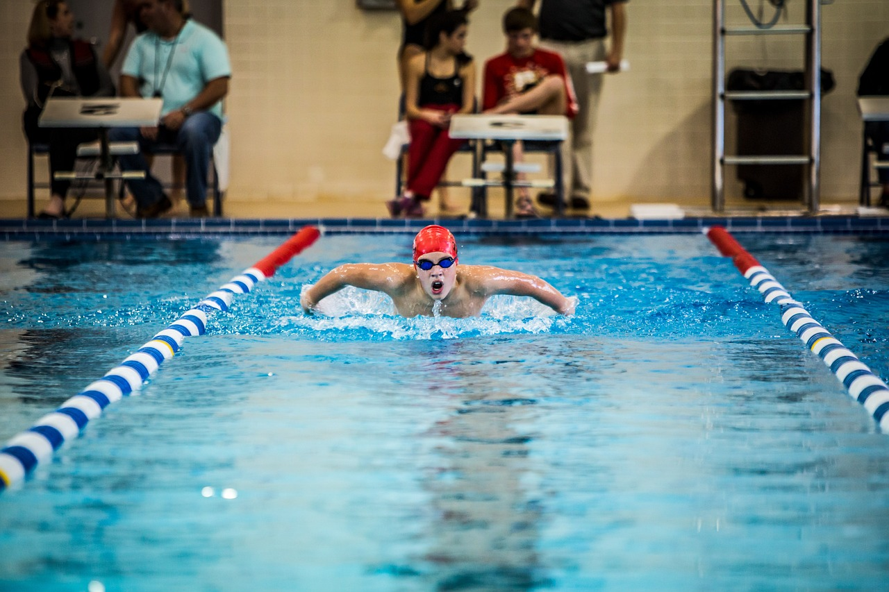
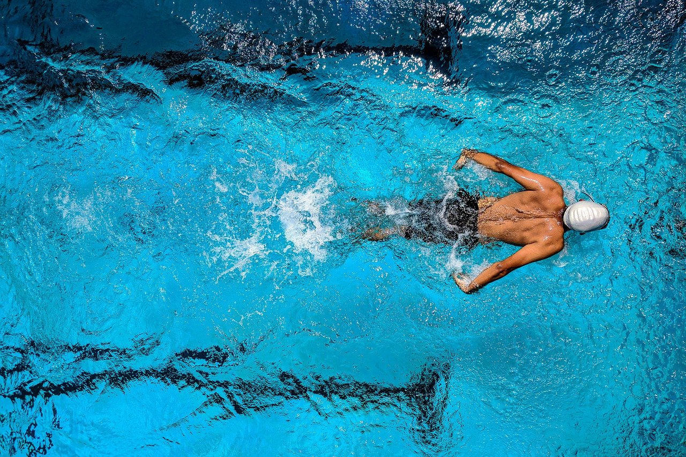

Estilos de natación
En la natación existen cuatro estilos principales: crol, espalda, braza y mariposa.
Crol
Este estilo es el más popular en las escuelas de aprendizaje porque es el primero en enseñarse. El crol tiene su origen en la palabra "crawl" del inglés, que significa reptar o arrastrarse.

Estilo espalda
También denominado como crol de espalda. En este estilo el nadador está en posición dorsal o supina y consiste, al igual que el crol de frente, en una acción completa y alternativa de ambos brazos (brazada) y un número variable de batidos de piernas (patada).
Estilo braza o de pecho
Es el más antiguo de todos ya que sus movimientos y postura son más naturales. A pesar de que su técnica ha evolucionado más rápido que el resto de los estilos, se trata del más lento de los cuatro.
